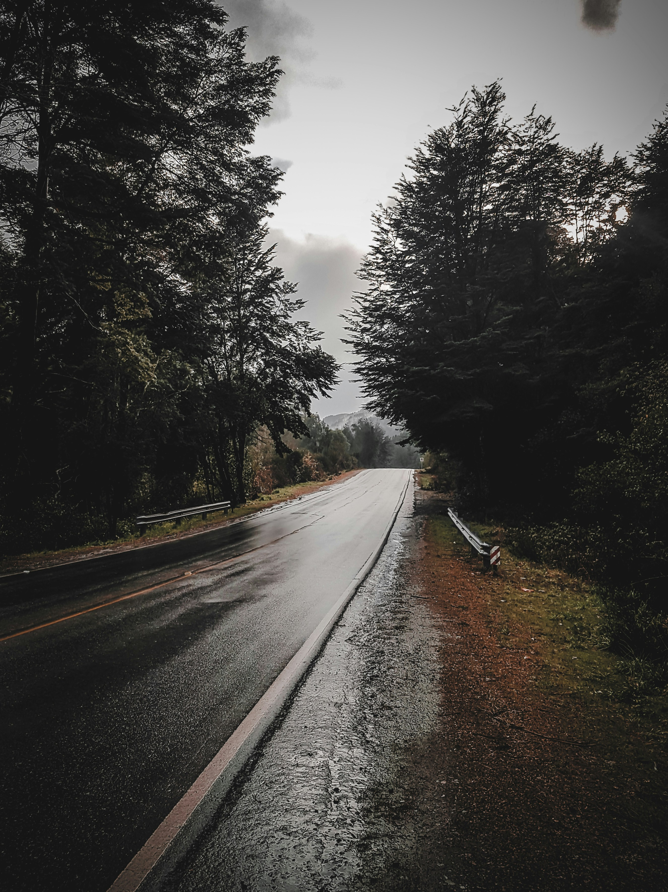

About Me

Hi, I'm Nicholas Eaton, a Full-Stack Developer with a background in transport refrigeration and hands-on technical work. My experience troubleshooting complex mechanical systems taught me how to analyze problems, stay calm under pressure, and build practical solutions skills I now apply to software development. I enjoy building responsive web applications and working across the stack with technologies like JavaScript, React, Python, Flask, and SQL.
Skills
- HTML5, CSS3, JavaScript
- React, Bootstrap, Tailwind
- Python, Flask, SQL
- API Development, Firebase
Background
I currently work as a mobile transport refrigeration technician, but I'm transitioning into software engineering. My hands-on experience troubleshooting and problem-solving in the field gives me a unique perspective and determination as I learn coding.
Interests
Outside of coding, I enjoy working on cars, spending time with family and friends, and exploring new technology. I'm always eager to learn and grow.